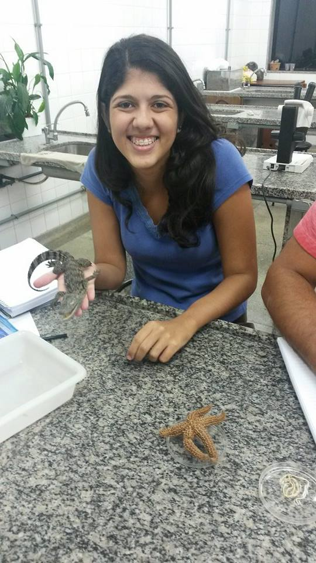
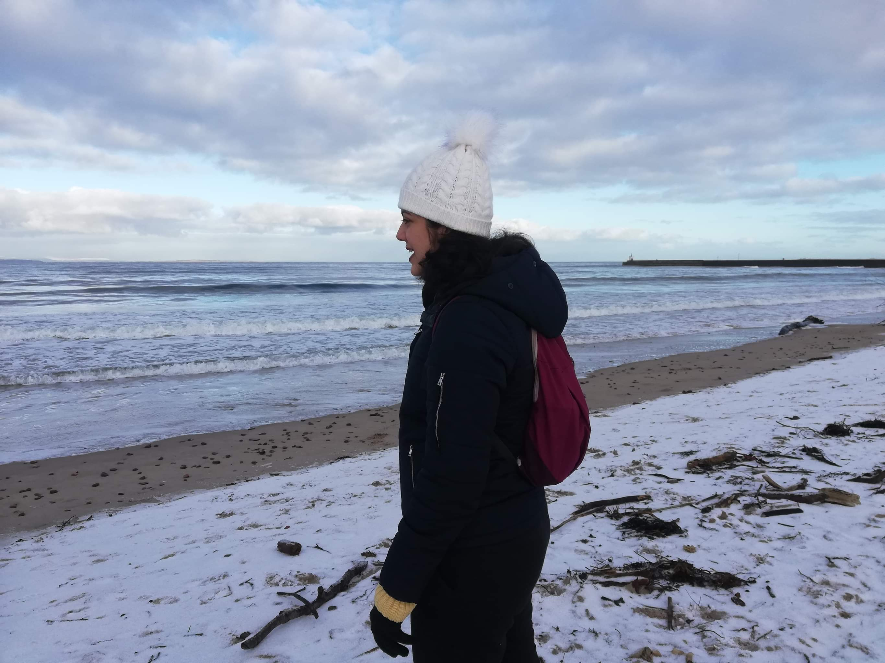
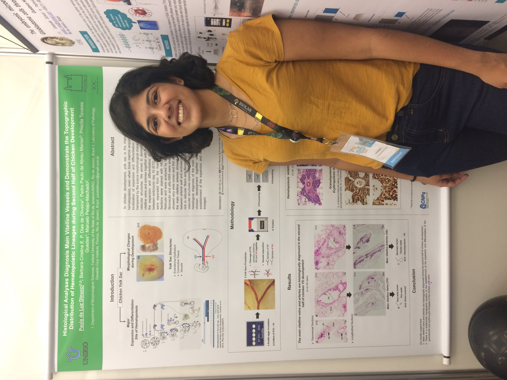
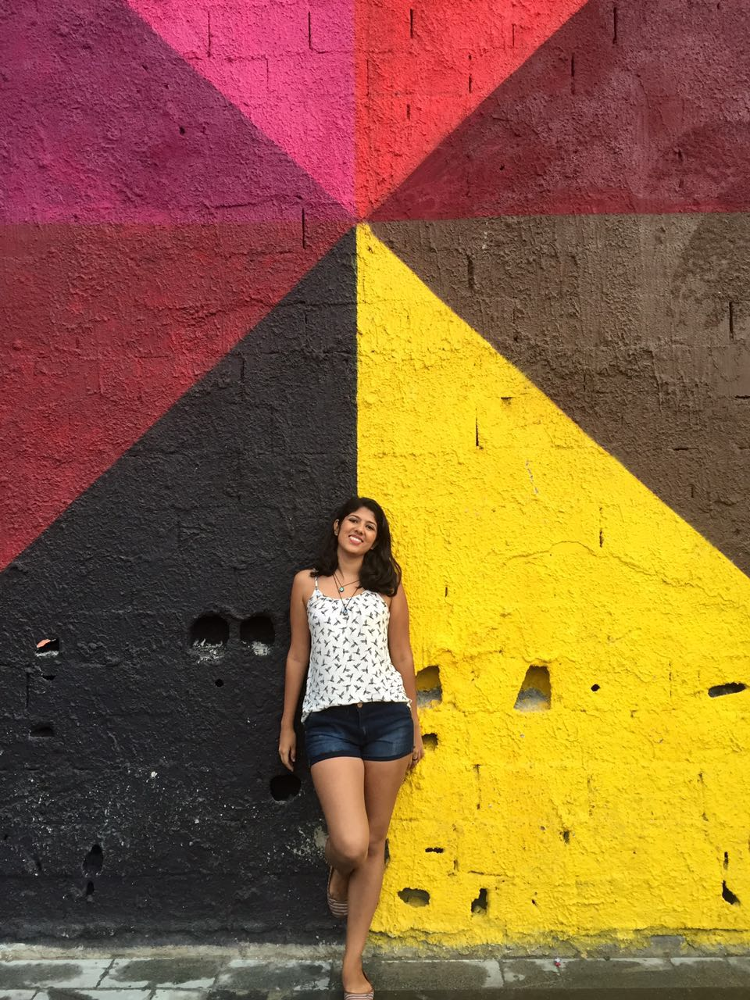
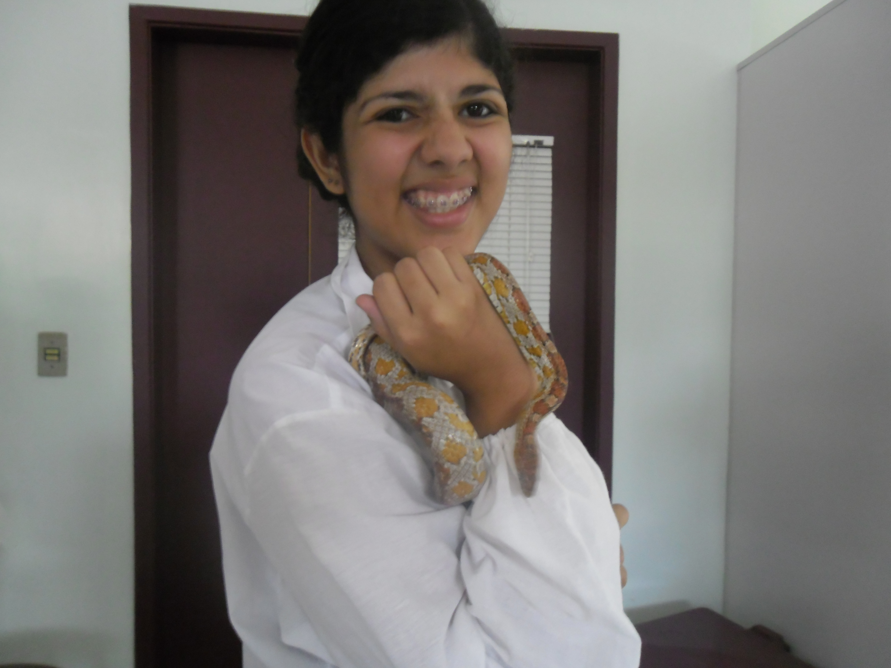
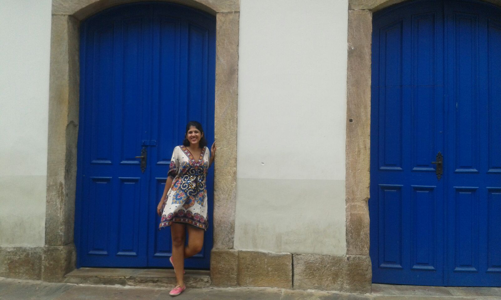
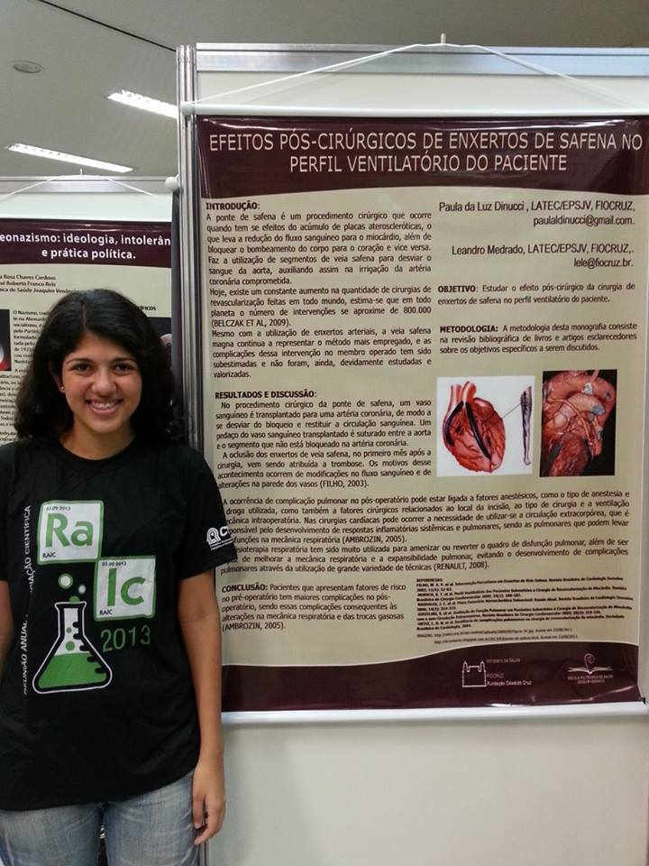
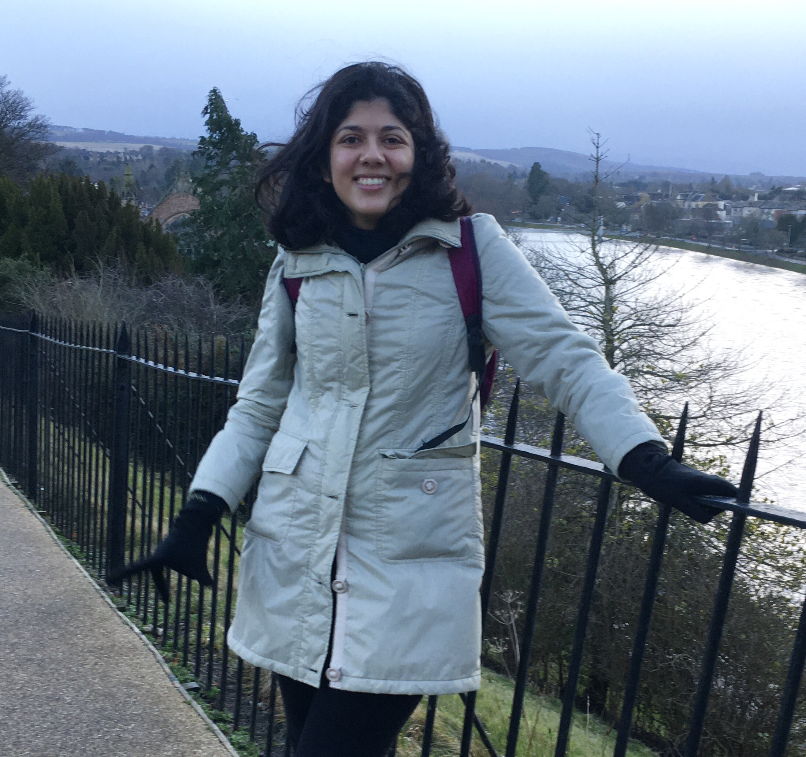

"Nunca estou realmente satisfeita quanto a entender alguma coisa; porque, até onde entendo, a minha compreensão só pode ser uma fração infinitesimal de tudo o que eu quero compreender"
(Ada Lovelace)
SOBRE MIM




Carioca do subúrbio do Rio, bióloga de formação, tendo dedicado grande parte da minha vida a pesquisa, uma apaixonada por ciência e agora também por tecnologia, sempre com um livro na bolsa, pesquisando notícias da atualidade e descobrindo novos fatos históricos, pronta pra desbravar o mundo através da janelinha de um avião e buscar seu lugar ao sol.



